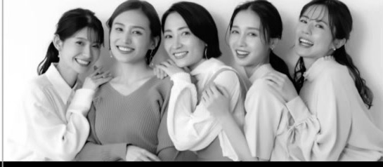
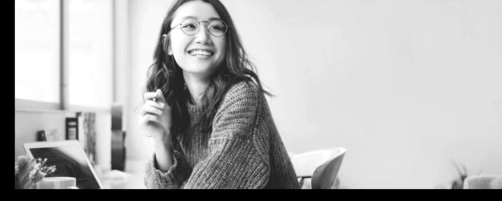

Learn
経験棚卸し × AI
これまでの人生経験を丁寧に振り返り、AI時代に通用する強みとして言葉にしていく。世代や経験に合わせた学びの場をつくっています。
01 — Activities
学び、つながり、踏み出す。
子育てや介護、これまで積み重ねてきたキャリア。ひとりひとりの経験は、新しい時代を生きるための確かな力になります。ウーマンズヴォイスは、学びと出会いを通して、女性が次の一歩を踏み出す瞬間に寄り添います。
Approach
Learn
これまでの人生経験を丁寧に振り返り、AI時代に通用する強みとして言葉にしていく。世代や経験に合わせた学びの場をつくっています。
Connect
さまざまな業界で活躍する先輩女性のリアルな話を間近で聴き、互いに応援し、高め合える関係を育てます。
Challenge
復職、転職、副業、起業、発信。踏み出したい一歩の形は人それぞれ。安心して挑戦できる環境を、仲間とともに整えていきます。
Gallery
※ 掲載写真の一部はイメージです。活動写真は順次掲載していきます。




Movie
Story

Story 01
「もう遅い」も「私なんて」も、いらない。
あなたの声は、きっと誰かの力になります。
ひとりの女性の声は小さくても、重なり合えば社会を動かす力になる。その想いから、女性同士がつながり、学び、自分らしい生き方のヒントを分かち合える場所として、ウーマンズヴォイスは生まれました。この場所でつながり、新しい一歩を、一緒に踏み出しませんか。
Story 02
キャリアを、もう一度
自分の手で描き直す。
子育てや介護でキャリアを離れた経験を、新しい働き方につなげていくストーリーを準備しています。公開まで、いましばらくお待ちください。
Story 03
経営者として、
ひとりの女性として。
事業の第一線に立ちながら、AIなど新しい技術を自分らしく取り入れていくストーリーを準備しています。公開まで、いましばらくお待ちください。